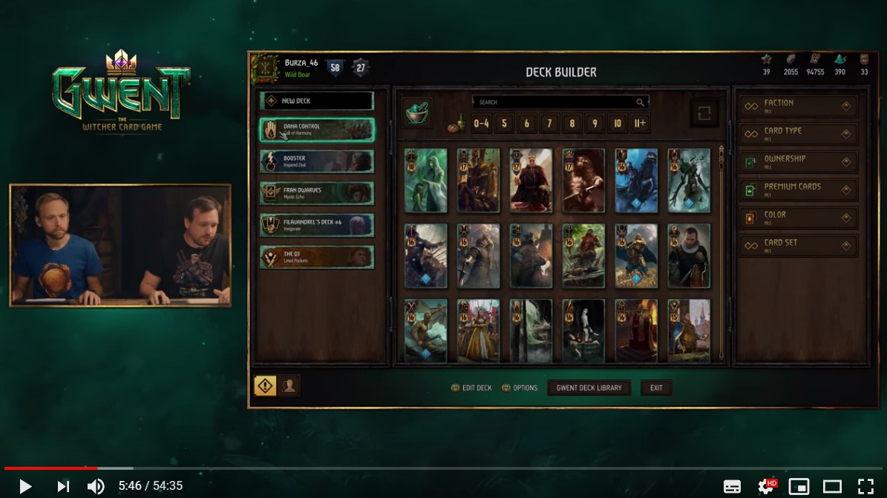
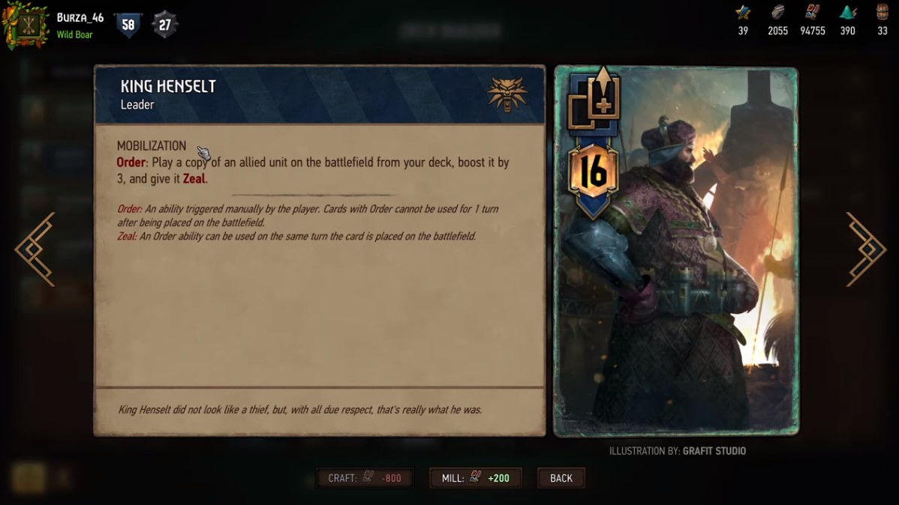
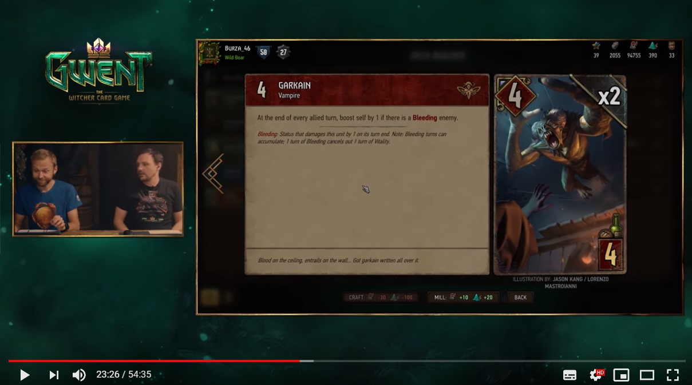
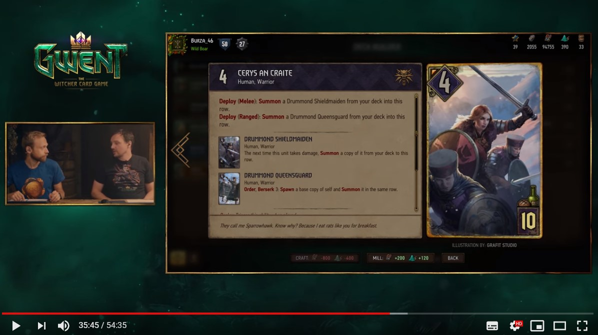

事前情報
当初、2019年8月29日（木）に Ver.3.2 アップデートが入る予定でしたが、1日延期され、日本時間の8月30日（金）19時頃にアップデートされることになりました。
ディレクターの Jason Slama さんによると、「驚愕することになる」とのことです。
これまでの経緯
- 7月末にブロンズカードを大量に強化するアップデートが入る。同時にシンジケートに6人目のリーダー《シギスムント・ディクストラ》が加入。
- 《ディクストラ》の性能が他のシンジケートのリーダーの上位互換であったため、《ディクストラ》がシンジゲートを牛耳る。
- 《フォルテスト王》に率られた刺青隊デッキが最強であることがわかる。射程の概念から解き放たれた《ケイドウェン軍の亡霊兵》を操る《ドラウグ》や単純にハイテンポな《キーラ・メッツ》など、北方諸国が覇を唱える。
- 対抗として、ニルフガードの《アーダル・エプ・デヒー》と《簒奪者》が増える。
- 《フォルテスト王》と《ディクストラ》が名指しで調整予定とされる。
- しかし、緊急バランス修正（ホットフィックス）は行わないとアナウンスされ、現在に至る。
アップデート紹介ビデオの概要
導入：最近は何をしていたか
- 最近は iOS 版の開発に力を入れている。これに一番時間を使っており、対戦環境の修正が遅れた。
- 今年3個目の拡張の仕事もしていた。いいものになるだろう。
- Challenger #5 の準備もあった。
- Esports のシーズン2の準備もしている。Challenger #5 は見逃さないよう。（リーク仄めかし）
- そして最後に、見た目の上で大きな変更を予定している。リーダーの見た目とアビリティを分離する。
リーダーの見た目とアビリティの分離について
- リーダーの見た目は制作に手間がかかるのに、あまり必要とされていない。人によっては全く使っていないリーダーもいる。
- リーダーの数を揃えるためにハードワークしているが、これまでも大変で、シンジケート追加のときもリーダーを間に合わせるためにプレミアムカードが間に合わなかった。
- 開発がデスマーチ状態になるのを避けたい。
- そこで、リーダーの見た目とアビリティと完全に切り離すことにする。たとえば《アラキス・クイーン》のアビリティを《エレディン》の見た目で使えるようになる。
- Ver.3.2 の段階では切り離さないが、近い将来、分離することになる。
- これにより、新キャラクターの追加もしやすくなる。リーダー追加＝リーダーアビリティ追加となっているとそれが難しい。
- リーダーの見た目とアビリティは勢力の垣根を超えることはない。

画像 1 ：デッキの左にどのアビリティを使っているのかがわかるアイコンが追加されている
- リーダーの見た目とアビリティの分離にあわせて対戦開始時の画面を新しくする。どちらが先攻かもわかりやすくなる。
- また、これに伴い、リーダーカードは将来的になくなる。
- 盤面上のリーダーアビリティの表示も変わる。また、マリガン中に自分と相手のリーダーアビリティを確認できるようになる。
- リーダーのアビリティ名を少しずつ学んでいくことをお勧めする。
- 今後リーダーアビリティの追加をするときも、リーダーの見た目を作る必要はなくなるし、キャラクターを追加するときもアビリティを気にしなくて済むようになる。

画像 2 ：各リーダーアビリティには名称がつく。将来的にリーダーカードは消え、アビリティ名が残る形になるようだ。そうなった場合は、この《ヘンセルト》は通常のレジェンダリーカードとして戻ってくるかもしれない。
その他、機能面の改善
- デッキビルダーでデッキを複製できるようになる。
- 今回のアップデートでは導入されないが、グウェントデッキライブラリーからインポートしたときに再起動する必要がなくなる。
- 対戦モード選択画面から直接デッキライブラリに飛べるようになる。
- 対戦モードのデッキリスト選択画面で、なぜそのデッキが無効になっているかわかるようになる。アップデートでバランス調整されたときにわかりやすくなる。
- ランク7より下（8～30）のプレイヤーはクラシックモードの「カジュアル」が選択できなくなる（画面上にオプションが表示されない）。なんとなくカジュアルにしてしまい、強さの違うプレイヤーとあたるのを避けるため。
- iOS 版導入とともに新規ユーザーが増えるため、必要な措置である。
- 盤面をクリックすると骨が動くなどのお遊びギミックが追加される。
- アリーナはリーダーを先に選ぶように変更される。
- Twitch Extension の「Gwent Observer」を追加する。配信者が GoG アカウントと Twitch を連携していれば、視聴者は Twitch のオーバーレイ機能でカードの効果や墓地などを確認することができる。望まれていた機能なので、導入できてうれしい。一生懸命開発した。
- チャージの連続使用はアニメーションの終了を待つ必要がある。これを直すのは結構難しい。そこで、チャージを使うときはカードが浮き上がり、わかりやすくする。
- 「夜のノヴィグラド」の盤面と、「シーズン・ヴァイパー・バンドル」が販売される。シーズン・ドリアードに変わる
- 好評だった前シーズンの早打ちモードはコミュニティの意見から採用した。今後も何かいいアイデアがあったら教えてほしい。
- 早打ちモードでアニメーションの問題があったが、これは基盤的な部分なので修正に時間が必要である。近い将来、手を付けてテンポ良くできるだろう。
バランス調整の概要
パッチノートも公開されました
- 前のアップデートは200枚以上調整したが、今回は少なめにした。各勢力数枚ずつである。いくつかのカードは根本的に作り直した。
- Challenger 大会が近いので、リスクの大きな変更はしていない。メタ環境が安定することが求められている。
- ところで、私（Slama）自身、今シーズンは20戦《ディクストラ》に当たったが18勝した。ただしくブリーディングできれば勝てると思っている。とはいえ、《ディクストラ》には問題があった。「ぶっ壊れ」とまでは考えていないが、直すときがやってきた。
- 14枚のカードがアップデート後4日間補償対象で、粉砕時の紙片量が生成必要量と同じになる。吸血鬼が多め。
- 吸血鬼が出血シナジーで強化。
- スケリッジが最も変更枚数が多い。ただし修正自体は細かい。
- 狂戦士に数値を表記し、発動する戦力を明確にする。必ずしも基本戦力の半分で発動する必要もなくなるので柔軟に調整できる。
- 北方諸国とニルフガードはあまり変えていない。
- シンジケートでは、謝礼の連続使用がしやすくなる。これは実装のミスだった。
- 懸賞金は同時に1つしか付与できないようになる。2個目を付与すると、1個目の懸賞金が消えてしまう。懸賞金で一気に点が出るようになっていたのを修正。
調整例で紹介されたカード
- 《ブラビケンの音楽隊》：戦力が4から6に。獲得する状態に「破滅」が追加。カードをプレイ可能な強さにした。
- リーダーの《デトラフ》：3チャージ。敵ユニットに出血3を与える。チャージをすべて使った場合、《エキムマーラ》を自陣の無作為な列に生成し召喚する。
- 《夜の女王》：「余り変わっていない」と紹介されたが、何も変わっていないように見える。
- 《ブルクサ》：最初から成長付き。ダメージ2が出血2に変更。
- 《ガルカイン》：敵に出血状態のユニットがいれば毎ターン1ブーストに変更。吸血鬼エンジンになる。
- 《ネクラット》：2ターンに1回、出血2を付与。吸血鬼ユニットをプレイするとクールダウンが1減る。
- 《ゲイル》：出血状態のユニットには3ダメージを与えられるようになった。追撃が発動しやすくなる。

画像 3 ：吸血鬼がアーキタイプにまで強化。望んだモンスター強化ではないかもしれないが、勢力そのものは大きく変えずにやっていくとのこと。
- リーダーの《アイスト》：スケリッジ勢力なら戦士以外も復活できるように。戦士デッキ以外でも使える。
- 《シグヴァルド》：狂戦士4に。半分以下にしなくても2ダメージを与えるようになる。
- 《ヘムダール》：任意の列の無作為なユニットに1ダメージを与える。その列のユニット数分、繰り返す。狂騒が発動しやすくなる。
- 《アン・クライトの賊徒》：戦力が3から2に減ったかわりにダメージ対象が敵ユニットのみになり、使いやすくなる。
- 《フラヤの祝福》：錬金術タグがつき、ブロンズスケリッジユニットのみに限定。
- 《スヴァルブロドの教団員》：毎ターン左のユニットを回復し、右のユニットに1ダメージを与えるユニットに。一番右に置けばデメリットなし。
- 《グレミスト》：命令で浄化するユニットに。錬金術を使うたびに命令が復活。
- 《堕落した巫女長》：墓地にある野獣ユニット数分ブーストするユニットに。
- 《テルショックの動物使い》：ブロンズとして強すぎたので、野獣ユニットに活力3を与える4コストユニットに。結束で野獣ユニットの制限が外れる。
- 《蘇生》：ユニットを回復し、回復した分だけブーストする。錬金術タグ追加。
- 《シグルドリファの儀式》：墓地から召喚する対象はスケリッジであれば戦士でなくてもよくなる。錬金術タグ追加。
- 《セリス・アン・クライト》：近接列なら《ドラムンドの盾乙女》、間接列なら《女王近衛兵》をデッキから召喚。

画像 4 ：このような《ロッシュ：冷血漢》タイプの多ユニット展開カードが増えるとコントロール優位の環境が緩和されるだろう。
- リーダーの《フォルテスト王》：ブースト量は1に戻る。ブーストを2にしたのは間違いだった。
- 《ドラウグ》：プレイした列のみ、《ケイドウェン軍の亡霊兵》に変えるように。
- リーダーの《フランチェスカ》：墓地から再使用するカードをスコイア＝テルに限定。《ラグ・ナ・ログ》2連発などはできなくなる。ニュートラルのスペシャルカードにデザインの余地が生まれる。
- 《待ち伏せ》：3ダメージを与え、追撃で《エルフの名射手》を生成。
- 《パヴコ・ゲイル》：自陣にエルフがいたら毎ターン2ダメージに。
- 《マハカムの賊徒》：配備で活力を得る4コストユニットに。継戦は強いが手札バフシナジーにはもっと良いカードがあるため、使われていなかった。
- 《ハーフエルフの狩人》：調和持ちで、配備で《エルフの名射手》を生成。
- 《枝垂れ柳》：調和持ちで、近接列ならシールド、間接なら敵ユニットに毒付与。
- 《森の呼び声》：スコイア＝テルに限定した、2ブースト付き《勅令》に。
- 《イェネファーの祈祷》：相手のユニットまたはアーティファクトを自軍デッキの一番上に置く。
- 《セリット》：《オーケス》が手札にあるときのダメージが4に、ないときのダメージが2にそれぞれ減少、コストも8に減少。ダメージ減少施策の一環。
- 《ステファン・スケルン》：そのターンではなく、そのラウンドの最後に使った戦術カードを生成してプレイに変更。戦術カードを使うタイミングを離すことができるように。
- 《ウォルター・ヴェリタス》：シンジケートに新カード追加。ブロンズシンジケートカードを入手。ヴェリタスの手記を執筆していたことから Slama さんをモデルに。
- リーダーの《クリーヴァー》：デッキから任意のシンジケートスペシャルカードをプレイ。コスト10以下のものをプレイした場合は2コインを得る。
- 《詐欺》：利益は3～5に。ノーリスクだったため、使われすぎていた。
- 《イゴール“フック”》：クールダウン1が追加。壊れない範囲で面白いカードを作るのは難しい。制限をかけすぎるとつまらなくなる。必要だから仕方がないが、こういう制限をつけるのは悲しい。
- リーダーの《ディクストラ》：犯罪カードを使った場合、1チャージではなく1コインを得るように。狂ったキャリーオーバーはできなくなる。
「シーズン・ドリアード」のシーズンモード
アップデート紹介ビデオによると、下記の通り：
- 自ターン終了時：味方の奇数戦力ユニットは1ダメージを受ける。一方、偶数戦力ユニットは1ブーストを受ける。
テキストミス・バグ情報
- シンジケートのコインの表示が常に「0/9」のままである。実際は獲得／消費できている。
- 《ミルナ》の遺言で強奪できるユニットが3点までのままである。（4点まで強奪できるよう変更されたはず）